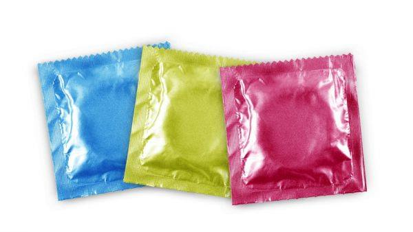

what is Gender
1.월경주기법(여성,자연,일시적) :
자신의 월경주기를 28일로 정했을 때 월경예정일 19일 전부터 12일까지를 금욕기라고 합니다.
월경예정일 14일 전은 배란일로, 배란일 전 2일은 정자생존기, 배란 후 5일은 난자 생존기 입니다.
하지만 월경주기가 일정하지 않기 때문에 피임률이 낮습니다.

2. 기초체온법(여성,자연,일시적) :
1달동안 6~8시간의 안정된 수면을 취한 후 아침 일찍 깨어나, 잠자리에서 나오기 전에 체온계를 입에 물어서 측정한다.
저온기에서 고온기로 이행하는 경계가 되는날에는 기초체온이 특별히 낮아진다.
이 날을 중심으로 전 2일간과 후 3일간을 배란일이라고 한다.
정자의 생존 기간을 3일, 난자의 생존 기간을 1일로 보면 배란 당일 5일 전부터 4일 후까지의 10일간이 임신 가능 기간이다.
그러므로 이 기간을 이용해 계획임신을 하거나 피임을 할 수 있지만 하지만 체온이 일정하지 않아 피임률이 낮다.
3. 콘돔(남성,물리적,일시적) :
성교할 때에 피임이나 성병 예방 등의 목적으로 음경에 씌우는, 라텍스 재질의 얇은 고무 주머니이다.
많은 사람들이 콘돔을 가장 많이 쓴다.
콘돔은 인체에 무해하고, 사용이 간편하고, 성병 예방, 구하기 쉽고, 싸고, 피임률이 높다.
※주의※
- 1. 콘돔을 사용할 시 끝 부분을 약간 비틀어서 공기를 완전히 빼낸 후 사용한다.
- 2. 콘돔은 재활용이 되지 않는다.
- 3. 콘돔은 매우 얇기 때문에 잘 찢어질 수 있으므로 주의한다.

4.질좌제(여성,물리,일시적) :
성교 10분 ~ 1시간 전에 질 깊숙이 좌약 1개를 삽입한다.
이 약 삽입 후 1시간 내에 성교를 하지 못하거나 반복할 때에는 다시 1개를 삽입 할수 있도록 한다.
언제 성교를 할 지 정해놓기가 어렵다는 단점이 있다
{ 많이 생각할 수 있는 질문 }
- 1. 정자를 다 죽이는 것인가요? --> 정자가 자궁 안으로 못들어가게 하는 것이다.
정자는 4일~5일 사이에 다 죽는데 그 때 까지 자궁에 못들어가므로 임신을 막아 준다.
- 2. 질좌제를 몇시간 전에 넣어야 하나요? --> 성관계 1시간 전에 넣어야 안전하다.
5. 경구피임약(여성,물리,일시적) :
약을 주기적으로 먹는 것이다.
매일 규칙적으로 같은 시간에 복용합니다.
처음 복용 시 생리 시작 1일차부터 매일 1정을 복용하고 21일 복용 후 7일간 휴약합니다.
휴약 8일째에는 생리 중이라도 다시 복용을 시작합니다.
복용을 중지하면 일반적으로 2~3일 내에 생리를 시작합니다.
※주의※
- 1. 일정 시간이 지나서 약을 먹으면 효과가 떨어지기 때문에 제시간에 정확하게 먹는다.

6. 루프(여성,물리적,반영구적) :
미레나 등 루프는 자궁내장치라고 불리며, 자궁강 내에 이물질을 삽입하여 피임효과를 얻는 방법이다.
자궁 내 이물질이 들어가면 염증반응이 일어나 국소적인 자궁내막염이 생기고 이에 의해 수정난이 자궁 내에 착상되는 것을 방해한다.
또한, 자궁수축을 일으켜 자궁 자체가 불안정한 상태가 됨으로써 피임효과를 일으킨다.
요즘에는 루프에 화학적 활성체 금속인 동이나 여성호르몬인 황체호르몬을 추가하여 피임효과를 더욱 높이고 있다.
{ 많이 생각할 수 있는 질문 }
- 1. 몇년동안 유지가 되는 것인가요? --> 평균적으로 3년에서 5년정도 유지됩니다.
- 2. 루프의 종류는 몇가지 인가요? --> 일반적인 구리루프와 생리량을 조절해주는 미레나가 있습니다.
- 3. 부작용은 없나요? --> 구리 루프는 골반염, 자궁 외 임신, 하복부 통증이 발생할 수 있으며, 마레나는 시술 후 출혈이 있을 수 있으며, 월경 기간이 짧아지고 월경을 안할 수도 있습니다.

7. 영구 피임법(여성/남성,물리적,영구적) :
정관수술은 남성이 하며 정관을 묶고 잘라 피임하게 되는 방법으로 10분 정도면 끝낼 수 있는 간단한 시술이며,
난관수술은 여성이 하며 난관을 잘라 묶는 방법으로 보통 제왕절개수술과 같이 시행하게 됩니다.
여성의 난관수술은 굉장히 힘든 수술이므로 보통 남성이 정관수술을 합니다.
{ 가장 많이 하는 질문 }
- 정관수술을 하면 사정을 하나요? --> 정자만 나오지 않는 것이지 사정은 합니다.
- 난관수술을 하면 생리를 하나요? --> 난자가 못나오게 하는 것이기 때문에 생리는 합니다.
8. 응급피임법(여성,물리,일시) :
응급피임약은 사후피임약이라 하며, 보통 원치 않은 성관계를 가졌을 때 72시간 내 복용,
수정란이 자궁내막 착상을 막아 임신을 피하는 약입니다.
사후피임약은 호르몬농도가 경구 피임약보다 4~6배나 되며, 배란 전에는 배란을 지연하거나 방해하기도 합니다.
부작용 위험이 있기 때문에 꼭 전문의와 상담 후 약을 복용해야합니다.